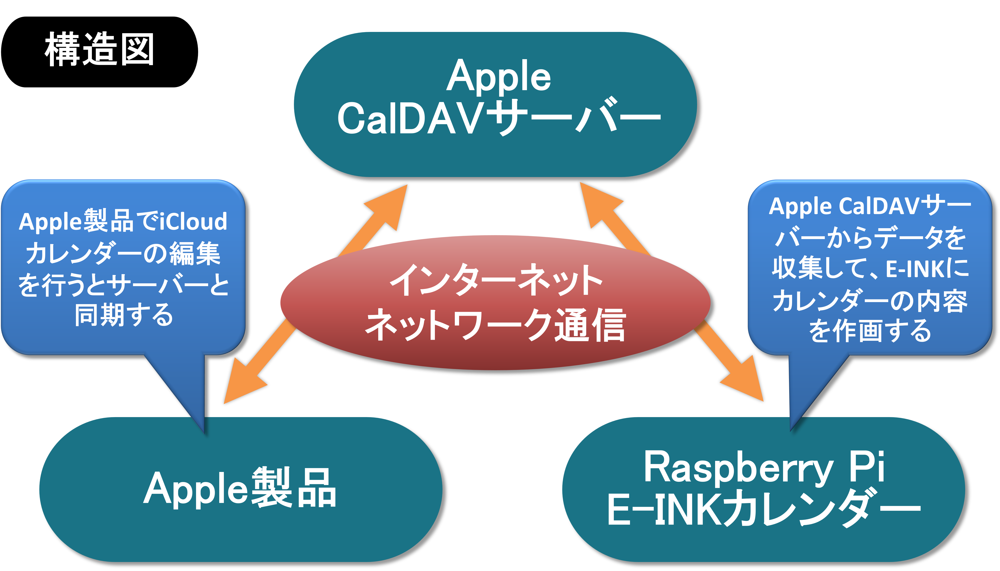

利便性と環境を配慮したカレンダー
本システムでは、スマートフォンアプリの利便性と紙のカレンダーの直感性を融合した新しいカレンダーを実現しました。
従来のカレンダーアプリでは、予定を確認するためにアプリを開く手間が必要であり、紙のカレンダーでは廃棄時に環境負荷が発生するという課題がありました。本システムでは、AppleのCalDAV機能を活用してRaspberry PiがiCloudカレンダーとリアルタイムで同期し、スケジュールデータを効率的に収集します。収集されたデータは日時順に整理され、E-INKディスプレイに表示されます。
この仕組みにより、電力消費を抑えながら常にスケジュールを確認することが可能になりました。また、3Dプリンタで製作した外枠とアクリル板で保護されたE-INKディスプレイによって、衝撃に強く耐久性のある構造を実現しました。さらに、Pythonを用いた高度なデータ処理アルゴリズムにより、複雑なスケジュールでも迅速かつ正確に表示することができます。
これにより、従来のカレンダーに比べて手間を大幅に軽減しながら、紙ゴミを削減し環境保護にも貢献しています。スマホアプリと紙のカレンダーの利点を併せ持つこのカレンダーは、日々の生活をより便利でサステナブルなものにします。